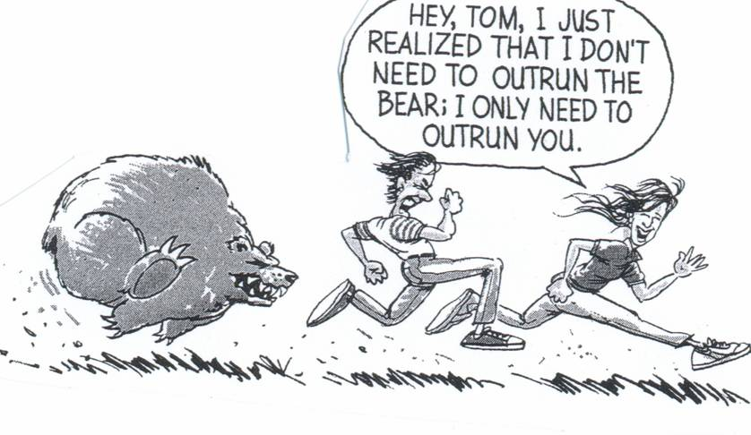

How To Win
Table of Contents
How To Win At Games
I really like games. I think that they provide a nice controlled environment for distilling what it means to become good at something, and as a result I think that everybody should play them.
Most games will generally have a common thread connecting them, and learning to get good at one will usually provide you with a framework that should enable you to get good at any of them. I wanted to talk about some concepts that are important. Specifically, I want to pull in various advice on learning games from all sorts of games in order to illustrate the common thread that connects all of it together, even if on the surface everything seems really different.
Level 0 - Your Mind is a Prison, But You Can Escape
The number one reason people do not improve at games is because of self-imposed restrictions they place upon themselves. In general, it's pretty easy to figure out when things are strong very soon after playing: you will be defeated by them many times, and they will begin to reveal themselves almost immediately. However, it's often the case that people will form certain attachments to parts of the game that they are drawn to, and then look down upon other players for not sharing the same worldview.
This is a much broader and more common problem than just any particular game or learning process, which is why it goes first here. Competing against other players at anything will put you face to face with other human beings who have arrived at a playstyle which adheres to whatever worldview they held at the time of learning it. Some players are drawn to mechanically intense styles, some players are drawn to maximally simple styles, some players are drawn to defense or offense, some players prefer using keyboards or controllers, and so on. The number one goal, competing at anything, is to demonstrate that your worldview has produced something stronger than your opponent's. You should want to show off that you worked on the right things, for the right amount of time, in the right way, and your opponent fell short.
However, many people get stuck at the stage where they simply believe that the opponent should not have that worldview. A very influential example here is Sirlin's concept of the scrub1.
You will not see a classic scrub throw his opponent five times in a row. But why not? What if doing so is strategically the sequence of moves that optimizes his chances of winning? Here we’ve encountered our first clash: the scrub is only willing to play to win within his own made-up mental set of rules. These rules can be staggeringly arbitrary. If you beat a scrub by throwing projectile attacks at him, keeping your distance and preventing him from getting near you—that’s cheap. If you throw him repeatedly, that’s cheap, too. We’ve covered that one. If you block for fifty seconds doing no moves, that’s cheap. Nearly anything you do that ends up making you win is a prime candidate for being called cheap. Street Fighter was just one example; I could have picked any competitive game at all.
This stuff is everywhere once you start looking for it. In the early days of Melee, there was much discussion about whether using the C stick to do aerials was cheating or not, since it's disabled in single player2. In DDR, there are endless debates about whether using the bar is cheating. Most of these have the common thread of "the way you are playing shouldn't be allowed, and you should play like me". If you want to get good at a game (or anything), you should dispense with this type of thinking as much as possible3. If something produces an advantage, you should want to use it. If something repeatedly defeats you, you should either use it or try to learn how to deal with it.
The opposite problem is also common, and almost as bad: many people get stuck perpetually believing that their worldview must be wrong. John Rizzo wrote a famous Magic: The Gathering article in 2001 called Stuck In The Middle With Bruce which outlines this type of player, called "Bruce"4. The general idea of a "Bruce" is a player who will somehow find a way to sabotage their own success, even making decisions that they know are wrong. This is because they have a "need to lose".
I know I shouldn’t Harrow on his end of turn three – I should wait until turn five so I can Evasive Action the Absorb that I think he might have. But you didn’t. Why? And ”I suck at Magic” is not valid this time. Besides, that’s my line. You may offer up any reason that you wish, but Bruce is also another possibility. Always.
Did you knowingly make a play that you were unsure of instead of thinking it through?
Did you decide to wait one extra turn to Repulse a dude, but you’re not sure why?
Did you waste an important spell when you knew that maybe you should hold onto it for a while?
I’d bet that if you were totally honest with yourself, you would find that you contributed to your own demise. And not just because you ”suck at Magic.”
This is pretty common in all sorts of games: a little voice in your head that says something like "I know the right decision is X, but I'm going to do Y". This sort of leak is made when people distrust their own decision-making and make decisions that they believe to be wrong5.
The nefarious part of this type of mental error is that it deals double damage when it inevitably fails. The decision you make ends up harming you, which also makes you doubt your future decision-making. If you made the original decision X and lose, it's much easier to simply adjust your decision-making in the future: simply being wrong is a different category from managing self-sabotage.
In virtually all competitive games, your number one enemy is yourself. If you can get out of your own way, it will make all the future steps much easier.
Level 1 - Your Opponent is a Person, Just Like You
A super common hurdle people encounter in early stages of learning a game is ignoring the fact that the person they are playing is a human being, who is trying to win the game by causing you to lose. Chess master Dan Heisman breaks this down into three stages of thinking in his influential article The Secrets to "Real" Chess.
- Flip-Coin Chess
- Hope Chess
- "Real" Chess
In Flip-Coin chess, you make a move without thinking about it too much at all. Your move is essentially random, so playing another flip-coin player will likely be a 50-50 chance to win, like flipping a coin. If you are playing flip-coin chess, you will basically always lose to a player who thinks a little bit before moving. This is where most people start out. Your opponent will make a move threatening your queen, and you won't see your queen being attacked, so you will ignore the threat and your opponent will take your queen on the next turn.
In Hope Chess, you unlock the power to think about your moves, but you aren't really considering what your opponent will do on the next turn. You can move out of the way of a threat you see on the board, but you can't see a threat that doesn't exist yet, even if you would see it if you were playing the other side of the board. At this stage, you are playing and just hoping that no matter what your opponent does, you can figure it out when it happens.
Finally, there's "Real" Chess. In Real Chess, you think about your candidate moves, think about how your opponent will respond to them, and then pick the move which makes the most sense. This sounds really simple, but it only takes one or two moves of hope chess to completely ruin your position. From the text:
[My son] was playing another 1300 player and outplaying him up and down the board for the first 50 moves. He had an easily won endgame, up the exchange and a couple of pawns. All of a sudden his opponent checked him and, even though he was in no time trouble, Delen immediately moved to a square where his opponent could then fork his King and a Rook, thus losing the Rook and the game. Master dad almost had apoplexy, "How can you play like an 1800 player for 50 moves and then like a 400 (beginning) player for one, throwing the whole game away??!" My son replied, "I can't work hard on every move; it's too much effort!"
…This also explains why you often run into so many people who just lost to a higher rated player and say, "I know I am better than him, but he beat me and he has a higher rating than I do; I just don't understand it." A player might be more talented and more knowledgable than another player, but be lower rated if the other player plays to his maximum strength on almost all of his moves, but he doesn't. This lack of consistency could be due to stamina, maturity, temperament, age, fighting spirit, or several other factors.
A core thing to grasp early on in any competitive game is that you are going to be playing other people who are out to get you. Your opponent is trying to kill you, and you need to be able to look at the state of the game and think about what they are planning to do to successfully do so. The worst possible thing you could do is to take your eyes off your opponent. Your opponent is a person, too, and they want to win just like you do6.
Level 2 - Difficult Decisions are for Good Players, Not You
Dan Luu has a famous blogpost titled 95th percentile isn't that good which is a good summary of what most of the learning process looks like for most things, with Overwatch as a primary case study. For most things, the 95th percentile is full of people constantly making game-losing errors all over the place. It's a huge gulf between this skill tier and the professional level, where everyone can be expected to not make too many big errors for the duration of the game.
If you want to reach this 95th percentile, you need to learn how to identify your mistakes, and then work on fixing them. That's all you have to do.
This process is sped up a substantial degree by getting feedback from stronger players, usually with some sort of video or game log. But often you don't even need a stronger player: you just need to watch yourself playing in a replay, and often you will identify all sorts of errors which are too hard to see mid-game7. There's all sorts of reasons people don't do this sort of thing: it's really embarrassing to ask people for help, it's really painful to look at videos of yourself losing, it's really tempting to believe you're already "good enough" and you just have to grind out more games. From Patrick Chapin's Next Level Magic:
When people try something new, many of them play over and over without reflecting on what is happening. They might be intoxicated with their wins; they might not want to take stock of why it isn’t working. Regardless, it isn’t a good way to do things—so don’t be that guy. Reflect on what you are seeing and what it means. Take action, and then learn from the feedback. After that, adjust to what you have learned and take action again
People get stuck here because this part of getting better at something is psychologically challenging. So much of this stage is taking ownership over your failures, about confronting your own shortcomings. People often get stuck trying to keep improving at things they're already good at (for diminishing returns), or burning out in the face of a seemingly endless ocean of personal failure.
But the big secret here is: everyone else you're playing is like this too. You don't have to outrun the bear, you just have to outrun the other guy.

It's extremely tempting at this stage of learning a game to try to learn all the cool advanced stuff that you see pro level players do. Crazy mind-reading plays, super-technical feats of skill, extremely clever strategies. You don't need any of that, for the most part. You don't need to do any of the special things you see your favorite pro do. You need to do the boring thing that all of those pros would do in your situations. From G Uzaku's Riichi Mahjong book 301 Established Practice: Which to Cut?
A tactical book with multiple answers to a single problem is popular. It might be good to learn the thought of various strong people at the same time. Many issues are divided, and there are a few issues that are unanimous, and I think that there is also the aspect that it is interesting for the reader. But wait, when opinions are divided among the strong, there is no answer, right?
You can think of most games as having a large pool of decisions that follow an inverse relationship. The majority of decisions are really easy, and a few of them are extremely difficult. The difficult decisions are not for you, even if that's the whole game to all the pro players you admire. Most games at most levels are won and lost based on screwing up the easy decisions as little as possible. Again from Next Level Magic:
Magic games are generally decided by tight technical play, not mind games. This material is useful and understanding it will make you a better card player, but it is vital to remember that playing Magic as perfectly as you can is what is important. It is generally better to spend your time and energy on playing excellent Magic rather than practicing “mind tricks” on people.
Level 3 - You Need To Play More
We've talked a lot about the necessary foundation you need to make your learning process as effective as possible. Once you have that all internalized, you need to play more games. You need to play more games. You need to play more games.
This part sometimes comes as a shock to people. "I thought the whole point of this was to make sure we would not have to spend tons of time learning something we could learn quickly instead?" It turns out that the key to improving quickly isn't learning efficiently instead of putting in many hours. In fact, it's quite the opposite: improving quickly is about putting in many hours, in the effective way. You can think of this like a macro-level version of playing "Real Chess" on every move.
Imagine briefly you are the perfect learner. You will immediately identify any unfamililar pattern you see for the first time, you will think about how to deal with that pattern, and then you will never make a mistake in front of that pattern ever again8. In this situation, you are still completely helpless when confronted with a completely new pattern for the first time. Sometimes you can reference vaguely similar situations in a k-nearest neighbors sort of way, but even that relies on your experience with similar situations. How do you handle this?
Ideally, you handle it by building a huge library of similar situations, and offload as much of the thinking as possible to outside of your games. You want similar combo routes from familiar openings, you want to know specific answers to specific stimuli, you want to free up as much cognitive bandwidth as possible at all times. Chase and Simon have a famous 1973 paper Perception in Chess which showed that master chess players could reproduce very complicated positions with many pieces with just a glance, but only if the positions looked like they came from real games. This was possible because they could see large groups of pieces and "chunk" them as a single pattern from similar spots they've seen before.
This should be a fairly heavy strain. There is a famous Go proverb which states: Lose Your First 50 Games As Quickly As Possible. Even better than a new pattern is a new pattern which defeats you. Those who win have the wrong opponent.
Aside: Kind and Wicked Learning Environments
Hogarth et al 2015 has a noteworthy result on the different kinds of learning environments. There are two categories they identify: kind learning environments, which provide a consistent reward for the same pattern, and wicked learning environments, where the reward is sparse and inconsistent even in spots you've seen reward before.
Most things can be fairly easily broken up into one of these two categories. Chess, Rhythm Games, Speedrunning, etc are slanted in the "kind learning environment" direction, whereas sports, fighting games, games involving chance or incomplete information are usually slanted in the wicked learning environment direction.
Pattern Exposure is essential in both types of games. A common theme is that games which slant kind provide a much more immediate reward for seeing lots of patterns. Kim Edit, a popular rhythm game streamer9, has a great video on how to get good at rhythm games.
The overall thesis is that: you can play more than someone else, even if you play the same amount of time. To do this, you sightread as many songs as possible, try to clear as many songs as possible, and be willing to get bad scores on charts you don't like and are bad at. Basically: maximize novelty as much as you can. This contrasts with how the vast majority of rhythm game players play, which is playing their favorite songs or charts over and over. "Don't be a picky eater". Every play you spend on a chart you've played before is experience lost compared to spending time on a chart you've never seen before.
Every person that followed this advice got better. I haven't met one person that didn't improve. You have to encounter patterns that you haven't seen before, and even if they're easy, your reading improves just by playing them more often. So you're bound to improve. And when you play harder patterns, you can use your experience and apply that to the harder charts.
In comparison, for games which exist in wicked learning environments, you generally need to be a little bit more discerning. Some language you will hear frequently in these games is good players talking about "working on" something when they play practice matches.
We can already assume, as above, that a good player is identifying uncomfortable spots and trying to fix them over time. How to do that when you have an environment where the variable reward makes it hard to tell if X strategy is better than Y strategy? The answer is by trying to engineer that situation in your practice games as much as possible, to experiment with various choices in that spot, and to reflect upon it afterwards. In effect, you try to convert the wicked learning environment into a kind one by using an aggregate reward over many examples, rather than a single binary outcome.
Level 4 - Don't Avert Your Eyes
Once you internalize all the above: you're working hard, you're committing to playing a lot, you're getting exposure to the patterns, you're confronting your weaknesses, you're taking every available advantage… you have to be willing to sit through the whole process of improving. This is an unexpected hurdle that is often surprisingly frustrating and difficult. It will not feel worth it10. That's the whole reason other people aren't all doing it already.
Improving in this way is often sort of like watching a very long, very boring movie where you are being tortured the entire runtime. It's really easy to see yourself always losing often to the same people over and over, and decide that learning <insert game> is not for you. It seems like you are doing everything right and it really feels like it's taking way too long to get to the good part.
Understanding this part is much easier when you start playing something where luck is a big component: games like riichi mahjong or trading card games where you can play with no mistakes and still lose if your opponent gets very lucky draws. Losing rating points or important matches despite technically sound, correct play can be really frustrating. But these games are all about maintaining a high winrate in the aggregate, and then grinding out a large volume of games. If you are making mistakes, you can fix them while reflecting upon this very large volume of games. If you aren't making mistakes, you still have to play this large volume of games anyways, so you shouldn't sweat the setbacks (especially if they could be caused by variance).
It's really easy to cave to the self-doubt. Seeking out discomfort as much as possible will often make you realize that you are overall worse at the thing than you originally thought. This is not only okay, it's good. Weaknesses you never acknowledge are weaknesses that never get fixed.
It's corny, but a big part of it is not giving up.
Conclusion
The world is big. There are lots of people out there who are way better than me at games, to an unimaginable degree. Legendary fighting game player and EVO Moment 37 victim Justin Wong has this tweet I often point to, where he writes out every video game he ever won a tournament for. It's 82 entries long.
What are all the games you won a tourney for
— Justin Wong (@JWonggg) June 29, 2025
(Doesn’t matter how small, flex that shit) LOL I actually had a doc for this
Street Fighter V (Season 1-5)
Street Fighter 4 (Vanilla, Super, AE, 2012, Ultra)
Street Fighter 3rd Strike
Street Fighter 2nd Impact
Super Street Fighter 2… https://t.co/tpZriZilL0
It's possible to look at stuff like this and get really in your own head about not having the talent or whatever. In comparison to winning tournaments in 82 games, my own goals and accomplishments seem trivial. Everything I could possibly envision accomplishing would seem trivial.
But remember the first thing we talked about in this post. In virtually all competitive games, your number one enemy is yourself. If you can get out of your own way, it will make all the future steps much easier. It is pretty easy to learn most things, and most things are learned in the same way. If you're interested in learning to play a game well, it doesn't require crazy talent or freak circumstances. The only person you really have to defeat, at the end of it all, is the old you.
Footnotes:
I view Sirlin as a sort of gaming Eliezer Yudkowsky. Those in the know about one or the other will hopefully get what I mean by that.
The so-called "cheat stick"
Maybe a minor footnote: I think it's okay to discuss ruleset changes! An important part of this concept is the part of the thought that "it's okay that I'm losing because this is unfair anyways" which is the part that interferes with winning.
I like when gaming communities use a common first name as shorthand for something like this. In smash, making excuses after you lose to deflect responsibility is called a John, with many related concepts like "prejohns" for excuses made for why you're anticipating losing in the future.
This extends to more than just the gameplay itself: you can lose at the character select screen, in the draft, at the bar the night before the tournament, etc.
A common hurdle people encounter on this front is by subconsciously sandbagging when considering their opponent's likely decisions. You really have to steelman it. It can be difficult to resist the temptation to convince yourself that you have a big advantage and that your opponent will roll over and die soon. But generally speaking, it's really important to develop the skill of envisioning your opponent making the best possible moves.
This happens for a variety of reasons. Some games are just too fast to process everything at speed, some games you have to pay attention to tons of things at once and miss something, some games there's just too much pressure for you to see it all objectively. A lot of this goes away watching a replay, especially pausing, rewinding, and slowing down a lot.
Critically: you may still lose faced with this pattern. But that's fine. You should lose a 50-50 about half the time, in theory. Losing more than that is where problems are identified.
And winner of Bemani Master Korea 2013
This was originally it's own section but I felt it wasn't coherent enough a single idea for the main body: A really common thread among skilled players of any game is eternal dissatisfaction. People who are good at games are explicitly uncompromising about allowing holes in their play to exist. This can feel pretty bad sometimes. Losing can feel much worse than winning, and the "good enough" feeling simply never arrives. It never can be allowed to arrive.
In Andre Agassi's autobiography, one of the most striking lines is talking about how he felt after winning a Grand Slam:
Now that I’ve won a slam, I know something very few people on earth are permitted to know. A win doesn’t feel as good as a loss feels bad, and the good feeling doesn’t last long as the bad. Not even close.
Likewise from Chapin's Next Level Magic:
Many people are content to settle for what is “good enough” in order to make them feel better about where they already are. But for those seeking true mastery, nothing short of perfect understanding is “good enough.” If someone tells you that it is better to aim for a less-than-perfect understanding, that is surely a sign of someone trapped in confusion and frustration.